2018 News

Old Bolingbroke update
Following on from our previous report, we are pleased to announce that our band of new ringers are now at a stage where we can ring all six bells unaided, and are now ringing for Sunday services. The steel bell frames are in the process of being wire brushed and repainted, and a number of stays have been replaced (some were rotten and some abused!) New bell ropes have been ordered, but with the uptake for the Ringing Remembers initiative, the delivery is expected to be some time around Easter 2019. We hope the old ropes will hold out until then.
Regular ringing practice is now every Wednesday evening from 6.30 to 8.00 pm and Sunday ringing is the 1st and 3rd Sunday at 10.30 am for the 11.15 morning service. Visitors are more than welcome to any of these.
To check events or contact us please visit our web site at https://colina1winchester.wixsite.com/website
Thanks go to the Tattershall and Coningsby ringers who have given so much of their time in training the new learners and assisting with the bell maintenance. We simply couldn't have got to where we are without them. We are really most grateful.
Our new ringers are keen to join in with Guild events in the future and look forward to meeting you good people next year.
Colin Simpson
Race-Night Fund-Raising Event - Alford - 27 Oct 18
The Eastern Branch's fund-raising event in support of the Guild was held on the evening of 27 October 2018 at Alford Church Hall. Once again the event was a Race Night, the 'Betty Collett Cup Meeting', which now seems to be a fixture in our year.
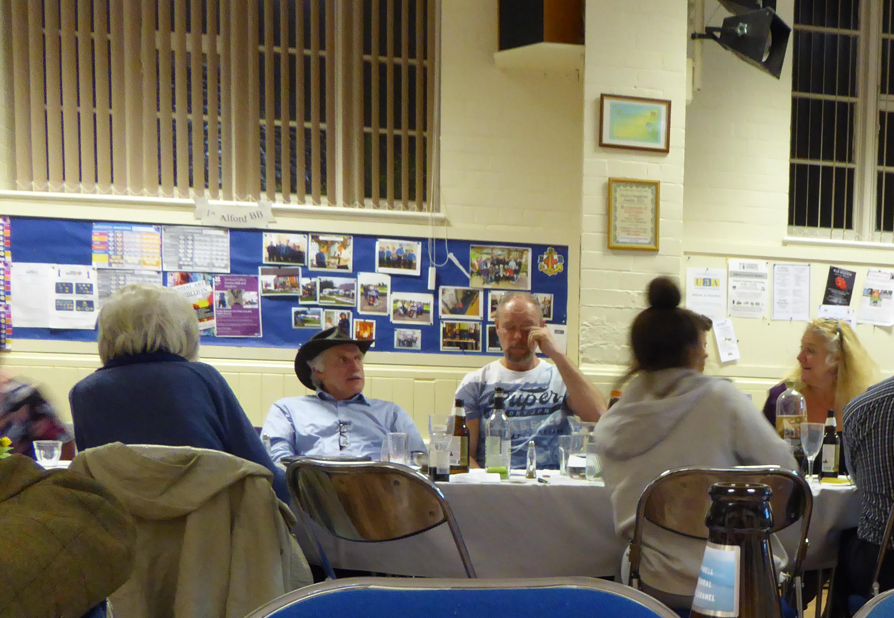
There was a full race card of 9 races, each race having 8 horses. All of the horses in the first 7 races had been pre-sold to owners from throughout the Guild branch for the very modest sum of £2-50 each! The eighth race was a 'selling race' with horses being auctioned off on the night; each was sold for £3-50!
The winners of the first eight races and their owners were:
1. Bess - Bobby Blake
2. Minxy Mia - David Johnson
3. Notlastagain - David Bennett
4. Shepards Way - John Collett
5. Mickey Mouse - Jill Day
6. Winning Number - Helen Brotherton
7. What Will It Be - Ian Willoughby
8. Doughnut - Annie Hardwick
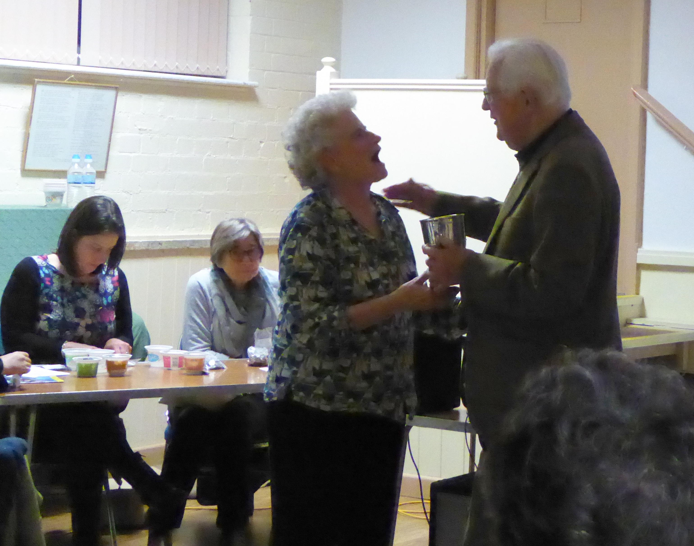
The Betty Collett Cup - The last race of the night was the 'Betty Collett Cup'. This was a race-off between the winning horses from the previous eight races. The winner of this race was 'Shepards Way', owned by John Collett, who seems to have a habit of doing well with his horses. John graciously offered to relinquish his place to Annie Hardwick, owner of 'Doughnut' the horse that ran second. Annie will be the proud holder of the Betty Collett Memorial Cup for the next 12 months, and she was also awarded a hamper of edible goodies kindly donated by John Collett.
At the halfway point in the proceedings there was a welcome break for a supper of jacket potato and lasagne followed by a crumble and custard, produced by Caitlin Meyer ably assisted by Richard Willoughby and their team of helpers.
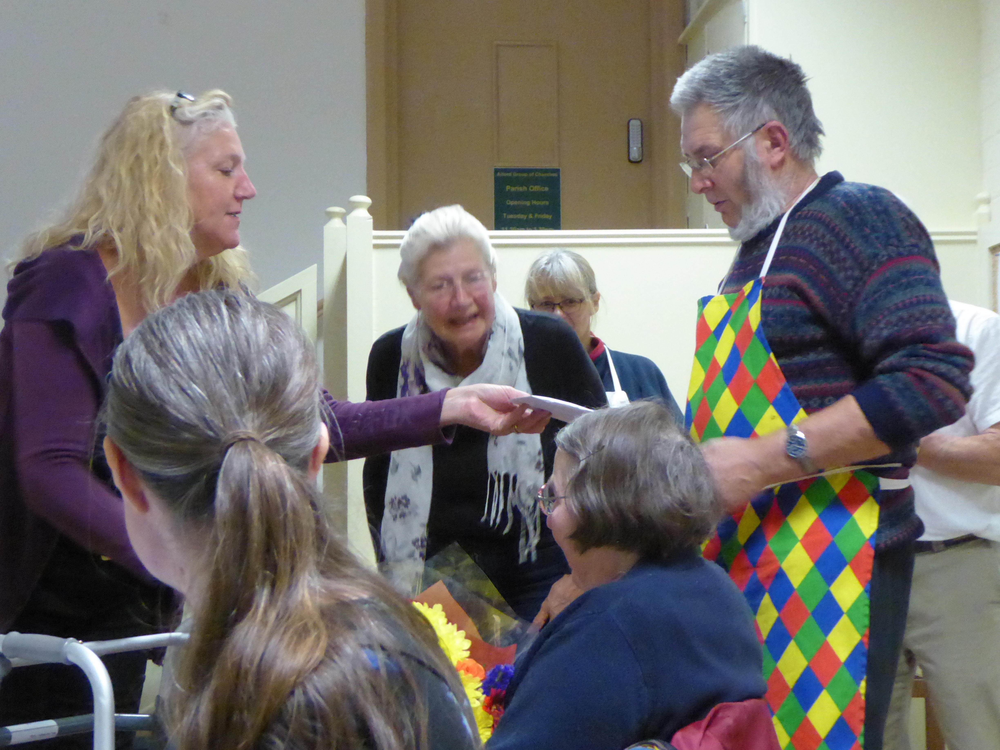
The raffle provided more fun and prizes, raising £99.00, and our thanks go to all who donated prizes.
Overall, including the raffle, we raised just over £500.00 for the Guild (a record for the event!), for which our thanks go to all who participated in any way in the evening. This year, the proceeds will be donated to the Guild's Education Fund.
Phil Ford
Eastern Branch Outing - Sat 6th October 2018
The Eastern Branch outing to Northern Branch was an enjoyable event.

Six towers were visited - Barton Upon Humber, Goxhill, Elsham, Brigg, Walesby, and Tealby.

Lunch was at Brigg Garden Centre.
All in all, a very enjoyable event. Many thanks to the organisers, Clare and James Barker, and to the host towers.
A full report will follow shortly!
Guild 6 Bell Striking Competition in Eastern Branch - Sat 8th September 2018
The Guild 6 Bell Striking Competition was an enjoyable evening. The method ringing side of the competition (for the cup) was at Ingoldmells ringing on the back 6, and the call changing side was at Alford (for the shield). There were 3 teams for call changing and 6 teams for the method ringing.
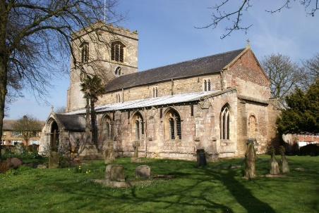
At Ingoldmells all teams chose a mix of different methods from plain hunt all the way to surprise method. In the call changing competition, the teams called a variety of changes going through tittums, queens, back rounds and kings.
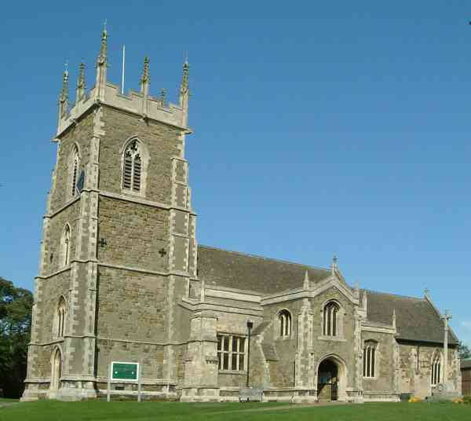
After ringing, everyone then convened at Alford to have a lovely tea and to hear the eagerly awaited results. The first results were for the shield. The winning team was Potterhanworth with 23 faults, second was Alford with 37 faults (who won the second place trophy) and Barrowby with 45 faults.
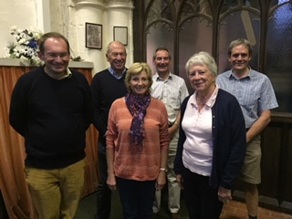
Then followed the results for the method ringing. Bourne were crowned champions of the cup (again) with 23 faults, Boston second getting the second prize trophy with 27 faults (only a 4 fault difference!), Messingham 49 faults, Lincoln Catherdral with 70 faults and Gainsborough with 78 faults. It was interesting to hear the judge comment that with some teams it was more difficult to listen to the striking because of the method they had chosen to ring.
All in all, a very enjoyable event. Many thanks to the organisers, the caterers, and not least for the meticulous judging.
George Pickwell, Boston
Church Bell Ringers at Old Bolingbroke
Following a taster session run by Bell Ringers from Coningsby at the Old Bolingbroke Village Open Day last April, a number of locals expressed an interest in learning to ring the Church Bells.
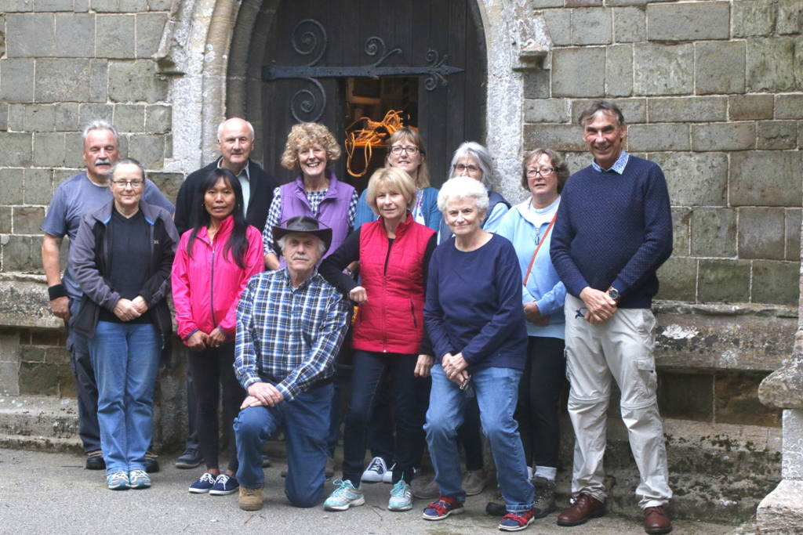
This coincided with the National project, 'Ringing Remembers', to recruit some 1400 new ringers, which equates to the approximate number of ringers who were lost during the Great War. This initiative will look to commemorate the centenary of the end of the 1st World War on Armistice day, this November.
In addition to the new learners, a few others in the village, who had rung before have come forward to augment the local band, which now numbers 10 ringers. After a number of weeks learning the basics at Coningsby, our ringers have progressed well, and are at the point of ringing 'solo', unaided by their trainer. The newly formed band are now pleased to be ringing some of the time at Old Bolingbroke, where they will continue to develop their skills.
A huge THANK YOU! goes to the ringers at Coningsby and Tattershall, who have given up so much time to train the new ringers.
Practice nights are every Wednesday at the moment, alternating with Coningsby, so ringing in Old Bolingbroke is fortnightly. Ringing starts at 7.00 p.m. and dates are confirmed on the village notice boards.
There is a social side to Bell Ringing, and following practices in the tower, the ringers frequently retire to a local hostelry to 'de-brief', and sometimes ring hand bells for entertainment. Anyone interested can simply turn up on a practice night, or contact Colin Simpson or Judy Lumb.
The new ringers are proud to be continuing a long tradition of Church Bell ringing in Old Bolingbroke.
Joint Practice of Central and Eastern Branches - Saturday 1st Sept 2018
On the 1st September Central and Eastern Branches joined together for a joint practice, starting at St Andrews Timberland at 1830 hrs and then onto the Holy Trinity Church at Tattershall for 1930 hrs.
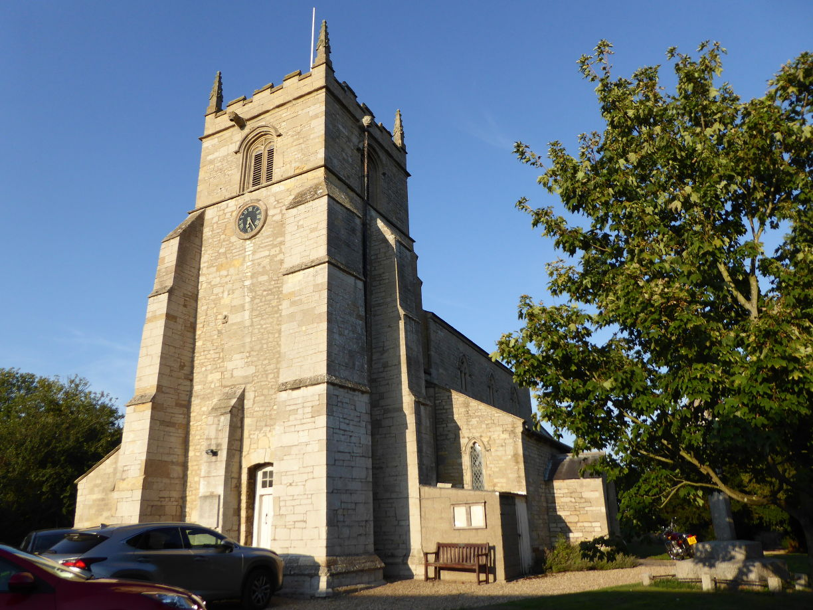
Arranging the day had been difficult with people being on holiday and of course, the big wedding in the Central Branch during the week. However, everything came together on the day. It was a beautiful, sunny, warm evening for the practice at Timberland, a ground floor six, where we were duly met by Timberland tower contact Janet Crafer.
There was a good turnout from both Branches, and the bells were put to good use with a variety of methods under the leadership of Central Branch ringing master Colin Ward. The ringing varied from rounds and call changes to Cambridge Surprise Minor ending with a nice touch of Stedman Doubles conducted by Jonathan Clark. The second bell being quite odd struck.
Chris Jackson had a fresh supply of Guild metal pin badges, which will be available soon from the Branch Secretaries. It was good to welcome learners, more experienced ringers and two visitors from the Sussex County Association, Margaret Ellis and Sam Tyler. The opportunity was there for people to have a go at something different, before moving on to Tattershall.
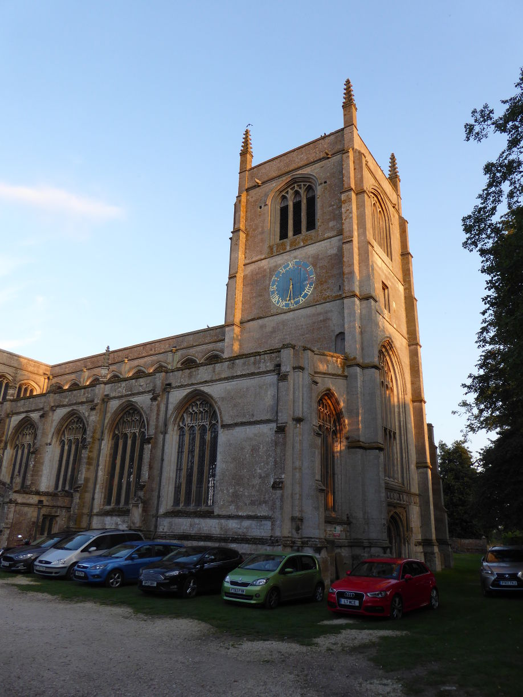
The ringing at Tattershall started promptly at 1930 hrs and by 2000 hrs there were approximately 50 ringers within the church, both Branches being evenly represented. Tony Barker, Ringing Master of the Eastern Branch, ran the ringing. The ringing ranged across the spectrum from rounds and ending with a spliced method. It was a very good evening which gave people the opportunity to ring with people they had not rung with before, on bells that were new to them. The very long draft did not prove a problem and the bells ran very smoothly.
The proceedings were interrupted for a quick meeting where a new member to the Eastern Branch was welcomed, Colin Simpson from Old Bolingbroke. Colin, ably assisted by Bob and Anne Hardwick, is leading a band of complete beginners who live in the Village and are determined to bring St Peter & St Paul's back to regular ringing.
A big thank you goes to everyone who attended and made the evening so successful, also to the people who organised the ringing and special thanks to Joan Simpson and Chris Woodcock who helped us in the kitchen.
Tess Rowland, Val Wild and Helen Brotherton
EB Visit to Lincoln Cathedral
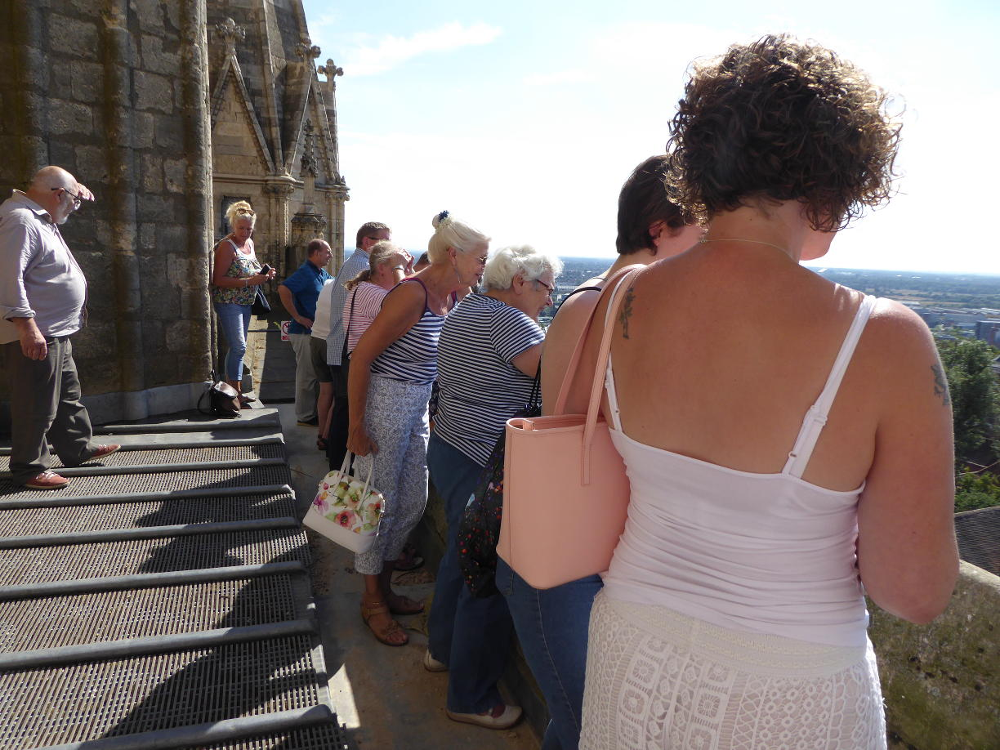
On Sunday 5th August twelve members of the Eastern Branch, a visitor, an Elloe Deaneries member, the mother of one of our younger ringers and several members of the Cathedral band met in the Ringers' Chapel of Lincoln Cathedral for our annual ringing for Evensong.
It was a hot, glorious summer day, the hottest day of the year and yet Les Townsend still looked cool wearing a shirt and tie. On reaching the Ringing Room Caitlin Meyer, deputy Ringing Master of the EB, took charge and ably ran the ringing.
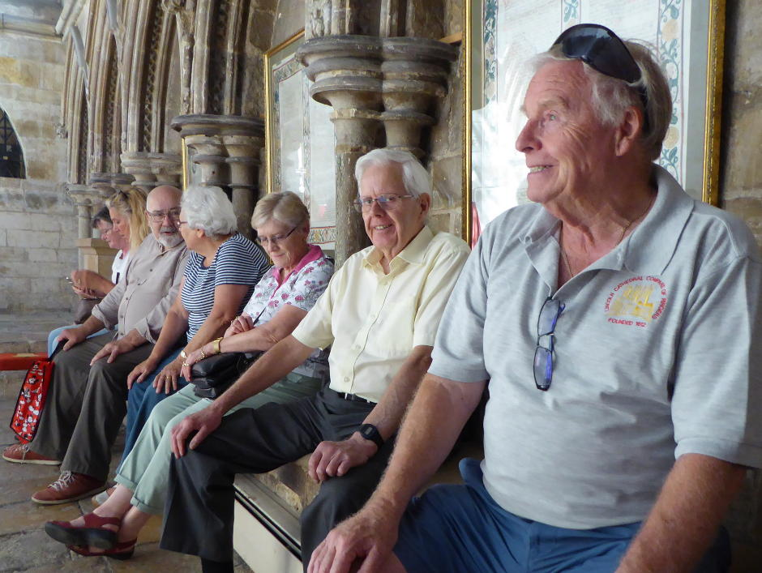
We started with rounds and call changes on 12 and thereafter rang plain hunt on eleven and twelve and Grandsire Cinques interspersed with more rounds and call changes. Little Bob was suggested but decided against.
We acquitted ourselves well and at the end of ringing Jeremy Wheeldon, Cathedral Tower Captain, opened the door to allow us on to the balcony where we enjoyed the sunshine and the magnificent views.
Helen Brotherton, Photos Val Wild
Rhoda Reynolds
It is with great sadness that we report the recent death of Rhoda Reynolds.
Her funeral will be held at St. Marys Church Swineshead on Wednesday 01 August at 11am.
There will be general ringing from 10am onwards. The bells will be rung open as the family feel that this is what Rhoda would have wanted.
Family flowers only. The family would like any donations made at the service to go to the LDGCB bell repair fund. There will be a collection plate at the back of the church.
Rhoda was an Honorary Life Member of the Guild. You can read more about some of her achievements here...
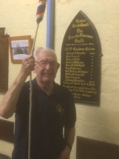
Happy Birthday, Tom. 86 years young!
Sunday 1 July was Tom Freeston's 86th birthday, the photo was taken during ringing for service at The Stump, and then he went on to ring for the service at Fishtoft.
Not bad eh?
Eastern Branch Striking Contest at Fishtoft - Sat 2nd June 2018
This year five bands contested for the George Brewster Cup at Fishtoft, the same number as last year at Wrangle. Notwithstanding the weights, Fishtoft bells are quite easy to ring but slight odd-struckness means good concentration is needed as a consequence.
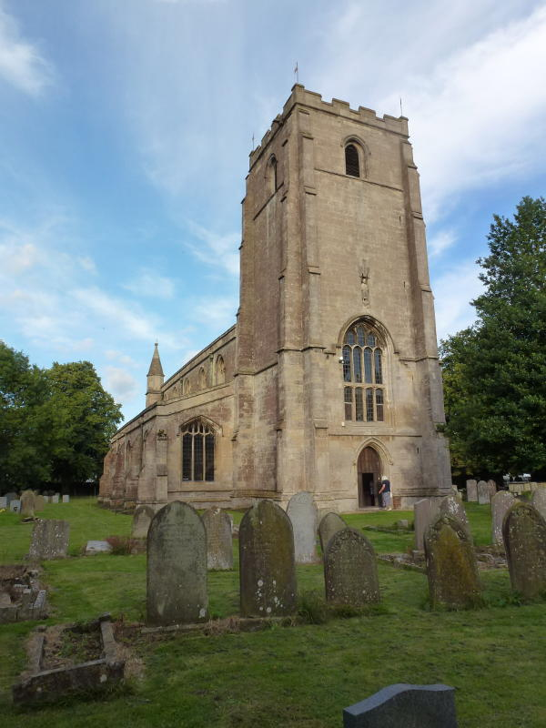
Having welcomed Alan and Joan Payne, the judges from Bourne, a location had to be found for them. The organ loft was rejected, as was the room below because of noise penetration from a noisy party at a local pub. They finished up in their car, driving to the centre of the churchyard next the church. This proved a canny move because at the end of the contest a downpour started and it was a simple matter to move the car along to the tower door and use a big umbrella.
All of the bands were complete on time and the draw was made just after 6pm. Alford rang first; this was fortunate since Edward Vear was anxious to get back home to his wife Jennifer who was recovering from an eye operation earlier in the day. All went well until the end when one bell began to lower quickly. "Broken rope" and "broken stay" was heard downstairs but it was a rope-snag & was soon put right. The fifth was then lowered and re-raised . It was only later on in the contest that Alford reported that the fifth was up "wrong" during their test piece. Possibly, had this been known earlier they might have been invited to ring again, the first effort being voided.
The other teams rang in order, performances being uneventful; tea (snacks instead of a formal effort, notwithstanding some people bringing fancy food) was eaten throughout the contest. The last team finished at about 7.45pm when Mick Smith, the Branch President, thanked everyone for coming along for the occasion. He then introduced Alan and Joan Payne, our judges from Bourne. Alan is a past Guild Master and Joan the organizer of the Southern Branch Wednesday programme.
Alan spoke with kind words on our ringing efforts in general and each team's performance in particular. He then gave the faults "earned" by each team, in the order that they rang, as follows:
1 Alford - 64
2 Butterwick - 60
3 Boston - 20
4 Ingoldmells - 23
5 Coningsby - 38
[Click here for more detail]
Alan congratulated Mick Smith, the Boston leader on their success and Joan presented him with the George Brewster Cup, which he accepted on behalf of the band.
Mick thanked Alan and Joan for coming along and helping to make the evening a success and Helen Brotherton, Branch Secretary, presented them with gifts as tokens of our thanks.
General ringing followed until about 9pm. We were joined by a ringer from Bedfordshire who was holidaying in Wainfleet. Tables & chairs were put away, the washing up finished and the hall tidied by soon after nine. Donations, such as they were, for the refreshments were given to the church.
Bill Brotherton
Eastern Branch visit to Sibsey 7th April 2018
The Eastern Branch were pleased to welcome three visitors from the Central Branch to the ringing practice on the eight bells at Sibsey on Saturday 7th April 2018, in the evening. The meeting was planned to be at Kirton, but due to a last minute problem with the tenor there, the ringing was moved to St Margaret's, Sibsey.
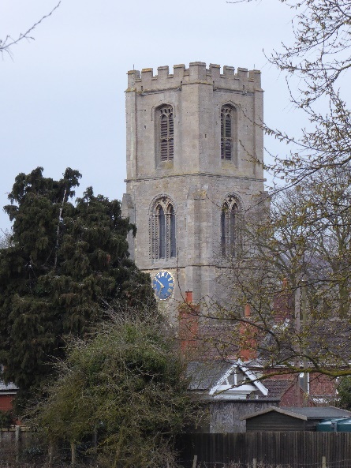
With ringing master Tony Barker in charge, a variety of methods were rung to suit the approx. fifteen members present. The evening's special method, Single Oxford Bob Triples was completed, once everyone scrambled onto the same blue line! Stedman, Grandsire, and Plain Bob Triples were rung as well as various major methods including Yorkshire Surprise.Following a convivial chat outside the church, we all made our way home. The next meeting is at Friskney on Saturday 5th May. The Guild AGM is in Lincoln on Saturday 28th April and it is hoped that as many members as possible will attend.
Posters for the annual flower festival at Surfleet were handed out, which runs from April 28th to May 7th, open 10am to 5pm daily, all welcome. The theme this year is musicals.
Val Wild, Kirton
Tattershall's Royal Visitor
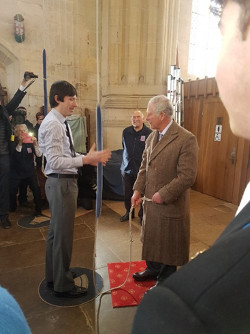
On Monday 19 March 2018 HRH Prince Charles visited Holy Trinity Church Tattershall at the end of his tour around Lincolnshire. He had started the tour by visiting Louth's Cattle Market, followed by a visit to various Boston charities and innovative industries. After arriving at Tattershall and climbing the many steps to the top of Tattershall Castle, to enjoy the immense panoramic view and being blown about by the tail end of the Beast from the East, he arrived in Tattershall Church to excited children, smiling congregation, ringing bells and a welcomed cup of tea.Rev Sue introduced him to the ringers, especially Joan Simpson whom he congratulated on her award of the BEM in the New Year's Honours List, awarded for her community service and over 75 years of ringing. He also met the youngest ringers, Bryony and Luke and asked them about their ringing. Chris Woodcock then invited the Prince to ring, which he accepted immediately and very soon the third was ringing out royally. I was then involved in a rugby scrum with the press who did not know and did not care that the other bells were up and dangerous, especially when the treble got wrapped around a TV camera, which probably accounts for why there was no TV footage of HRH ringing.
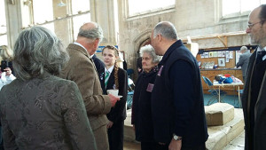
After the Prince had left and the Church returned to normal a quarter peal was rung in celebration of the day by a team of Eastern Branch and Central Branch ringers.It has been decided to rename the third as the Royal Third and when, in a couple of decades, an inquisitive ringer asks why the third is called the Royal Third, hopefully someone will remember why.
The local congregation should be congratulated for making the Church look fabulous and providing refreshments. You had to look hard for bat droppings!
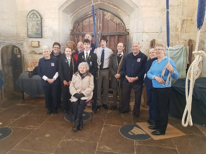
Tess Rowland - images joint effort of Coningsby Team.
Eastern Branch Learners' Practice - St Michael's Coningsby
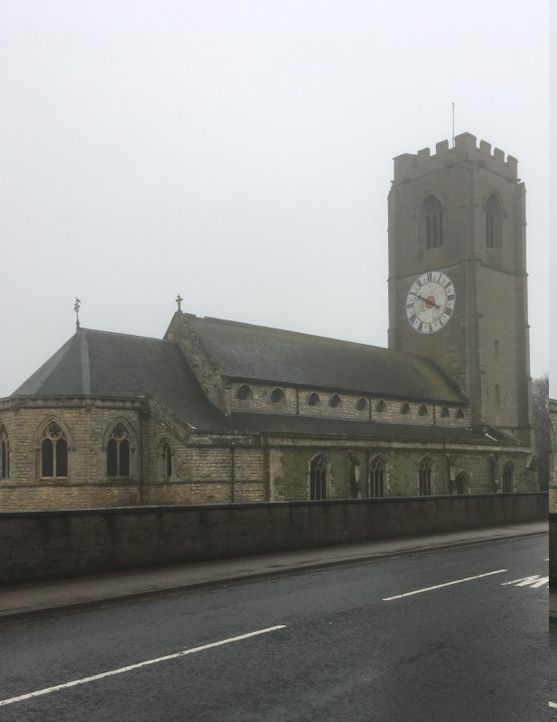
On Sat 3 Mar 18, a cold, slushy evening following on from storm Emma and the copious amounts of snow she had drifted around the county, 15 ringers from Eastern Branch and Central Branch attended a learners practice at St Michael's Coningsby.Tony Barker began the evening by running an Association of Ringing Teachers (ARTS) ringing up demonstration on his laptop. This showed the various ways to ring up bells and the way to do correctly. The learners then proceeded to ring the bells up and down assisted by the more experienced ringers. Chiming was also covered and there were various interpretations on the theme of ringing 3 chimes.
Rounds and call changes followed, with courses of Plain Bob Minor being rung towards the end of the evening. Tea and refreshments were provided by the Coningsby ringers.
Thanks to everyone who turned out on such a cold Saturday evening, the learners, the experienced ringers who generously helped the learners and Tony who had obviously planned the evening and what was to be taught to give learners a wider knowledge base and build confidence.
Tess Rowland
Eastern Branch AGM - Swineshead Jan 27
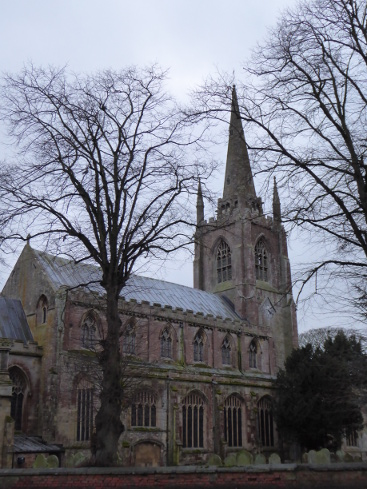
The AGM was held this year at Swineshead. Ringing was followed by a short service, a hot lunch at the local farm shop, the AGM and more ringing.The Guild Master Chris Turner was welcomed as were visitors from Elloe Deaneries Branch.
Annual reports were received and accepted from the EB officers.
Secretary Helen Brotherton reported on another year full of activity.
She noted in particular that this year we were almost overwhelmed by the number of weddings we had been invited to ring for. So many in fact that it had impinged on numbers attending branch events held during the day.
Unfortunately a proposed outing to see a casting at Taylor's was not feasible and with little time to arrange another we decided to forego an outing this year. Hopefully we will have good next outing year.
Ringing master Tony Barker reported on a good year with plenty of ringing opportunities.
Branch Quarter Peal Week was much better supported than in recent years. This was especially due to a series of quarters rung by the Coningsby & Tattershall band and some quarters organised by Jo French.
A team made up of Eastern Branch young ringers, together with three more from the south, made up our 'Lincolnshire Gamekeepers' team participating in the Ringing World National Youth Contest in July. We managed to catch up with the 'Lincolnshire Poachers'; both teams being scored equally. A very good effort!
Treasurer Val Wild reminded us that annual subs are now due and should be paid before the end of March 2018; £10 adults £3 for anyone in full time education.
Phil Ford reported on the EB's fund raising activities for the Guild. The 'Race Night' held at Alford had raised £434, which had been donated to the Guild Training Fund. The meeting agreed that the proceeds of the 2018 fundraiser should also be earmarked for this purpose.
Sales of Christmas cards and calendars had gone well, contributing some £260 to the Guild's overall total of £1200. Thankfully, all the Calendars had been sold as unlike unsold Xmas Cards they cannot be held over till next time!
We heard from Guild Master Chris Turner about the guild updates and about his hopes for the future direction of the Guild. He also mentioned that Guild Treasurer Roger Lord would be resigning this year and that a volunteer to take over was being sought!
Mick Smith was elected as EB President. Our thanks go to outgoing President Edward Vear for his sterling service.
Tess Rowland stood down as EB Web Master, and Phil Ford took the job on. All the other officers remained the same, and were thanked for their work last year.
Congratulations were given to Joan Simpson of Coningsby on her award of BEM in the New Year's Honours list for her services to Coningsby.
The meeting concluded with the drawing of the raffle which was well supplied with donated prizes. Many of us had been eyeing a very nice bottle of port, which was quickly snapped up by Bill Brotherton as holder of the first ticket drawn!